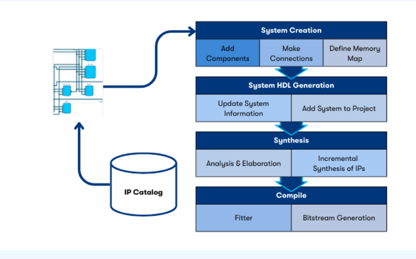
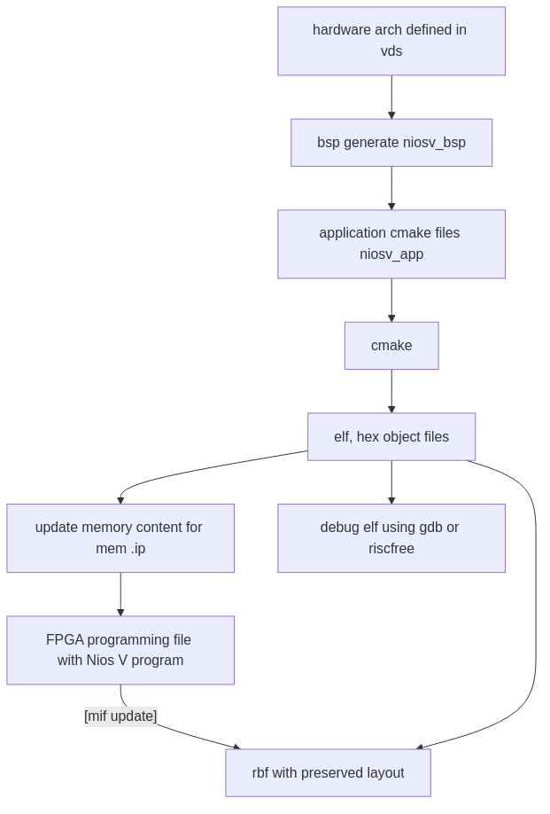

Visual Designer Studio

concept
Supported interfaces
Altera
Avalon
(AXI like)
Memory mapped
streaming
ARM AMBA AXI
AXI3
AXI4
AXI4Lite
AXI4Stream
AXI4NoC
AXI5
Conduit
directly exported, no interaction with connectivity
Clock
Specify frequency
AXI and Avalon interfaces have associated clock (used to introduce clock crossing where required)
Reset
has associated clock
AXI and Avalon interfaces have associated reset (used to introduce reset synchronisation where required)
Interrupt
Interconnect generation
Memory mapped interconnect
Any master to any slave
interface adaptation inferred
associated clock and reset
Option to explicitly insert components recommended
clock crossing bridge
width adaption
burst adaption
Variable pipelining at system level to trade latency vs frequency
Streaming
Any master to any slave
Software integration
BSP editor
niosv-bsp
and application template editor
niosv-app
available as cmd line applications or GUI for BSP editor.
Generates cmake based build files
Optional RiscFree IDE available

niosv development
Tour of the tool